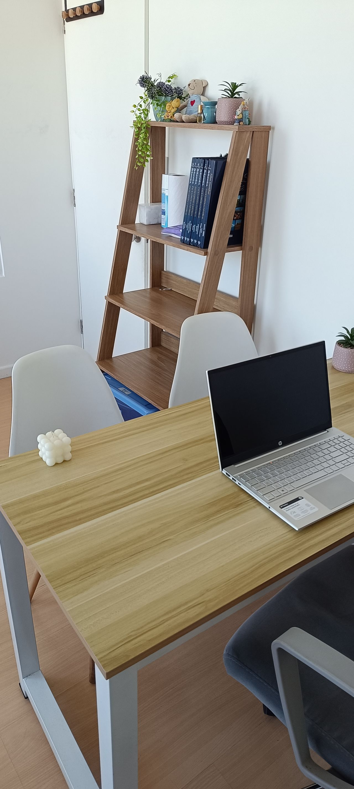
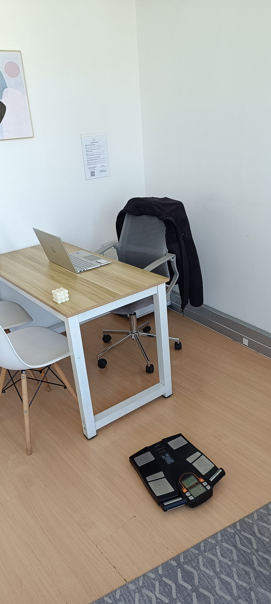

Evaluación de composición corporal en la primera consulta y un plan nutricional hecho a tu medida, con seguimiento. Más de 10 años de experiencia en salud pública y privada.
Agenda tu evaluaciónEn la primera consulta analizo tu composición corporal con tecnología Body Go Pro y, con esa información, armo un plan según tu estado actual, tu estilo de vida y tus objetivos. El informe te llega en formato digital.
No creo en dietas estrictas ni en soluciones temporales: construimos una alimentación que puedas mantener en el tiempo.


Av. Vicuña Mackenna Poniente 6690, La Florida
Atención también en otras direcciones